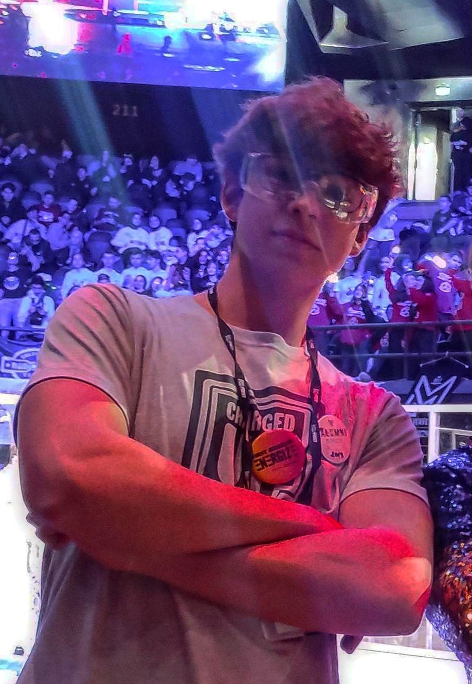

Hüseyin Umut
Işık
Computer Engineering Student at METU specializing in Quantum Computing, Deep Learning, and AI. Building intelligent systems at the intersection of advanced research and robust engineering.

About Me
As a Computer Engineering student at METU, my passion lies at the bleeding edge of technology: Quantum Computing and Deep Learning. I specialize in developing hybrid architectures that merge high-performance computing with cutting-edge AI methodologies.
My recent focus has been on exploiting quantum-inspired algorithms and true quantum hardware to tackle complex optimization and prediction problems—such as mapping non-linear market dynamics into purely Photonic Quantum Reservoirs or addressing the structural complexities of the LABS problem. I thrive in highly competitive environments, consistently bringing ideas from conceptual theory to award-winning execution within 24-48 hours alongside elite global talent.
Deep Learning & AI
Advanced model architectures, transfer learning, and generative AI integrations.
Quantum Computing
Photonic quantum reservoirs, VQC, and hybrid quantum-classical optimization.
Robotics & Vision
Event-based vision, depth estimation, and UAV autonomy at METU ROMER & ANZU.
Research & Experience
Candidate Software Engineer
MKE
Pioneering Augmented Reality implementations on Unmanned Ground Vehicles (UGVs) to enhance situational awareness and operational capabilities.
Undergraduate Researcher
METU ROMER
Conducting advanced research on Event-Based Vision and Monocular Depth Estimation. Developing simulation environments for complex robotic perception scenarios including lunar applications.
Software Team Member
METU ANZU UAV
Engineering autonomous UAV systems encompassing complex path planning, real-time object detection, and robust tracking algorithms.
R&D Intern
HIDROAN
Focused on AI model optimization. Deployed RFDETR object detection models utilizing TensorRT, ONNX, and PyTorch for highly efficient embedded edge deployment.
Awards & Featured Projects
EPFL Quantum Hackathon 2026 Quandela Challenge
Team Qedi: Eren Aslan, Arda Kara, Mehmet Alp Özaydın, H. Umut Işık
Tackled the highly competitive Quandela Challenge with our project, "Hybrid Photonic Temporal QRC (HPT-QRC)". We mapped non-linear market dynamics directly into a purely Photonic Quantum Reservoir powered by MerLin to forecast Swaption Volatility Surfaces.
Successfully outperformed classical deep learning baselines (like LSTM) by physically simulating temporal memory with significantly fewer parameters.
MIT iQuHACK 2026 NVIDIA Challenge
Team QAT: Hatice Boyar, Eren Aslan, İlayda Dilek, Jen-Yu Chang (Leo), H. Umut Işık
Competed among 1,400+ participants globally. Our project, "Hybrid GQE-MTS and Transfer Learning for LABS Problem", addressed the Low Autocorrelation Binary Sequences (LABS) challenge.
Developed a hybrid architecture integrating Generative AI with High-Performance Computing (HPC) to massively accelerate complex optimization tasks.
IQM QuantumHACK
Banco Santander Challenge
Developed a VQC model for risky investments utilizing true IQM Quantum Computers during a 24-hour hackathon in Madrid, Spain.
TEKNOFEST
Quantum Technologies
Applied QNNs for low-quality face recognition in a rigorous 30-hour hackathon in Istanbul.
TÜBİTAK 2204-A
Cryptography
First place in the Izmir Regional finals for an advanced cryptography algorithms and mathematics project.
METU-DTX Hackathon
Built a robust industrial defect classification model from scratch in just 6 hours.
BTK Academy CTF
Secured 2nd place in a 4-day intensive CTF camp focusing on Web-App security and kernel vulnerabilities.
Beyond the Screen
Let's build the future.
I am always open to discussing cutting-edge research, collaborating on hackathons, or exploring deep tech opportunities in Quantum AI.